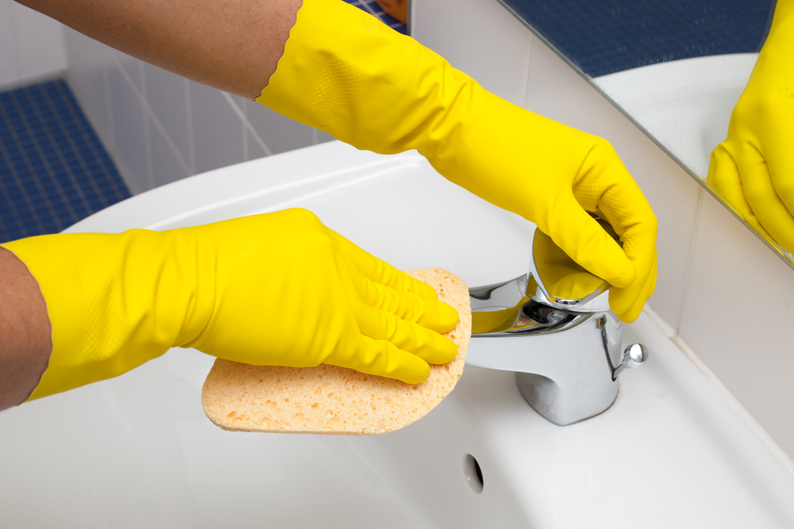
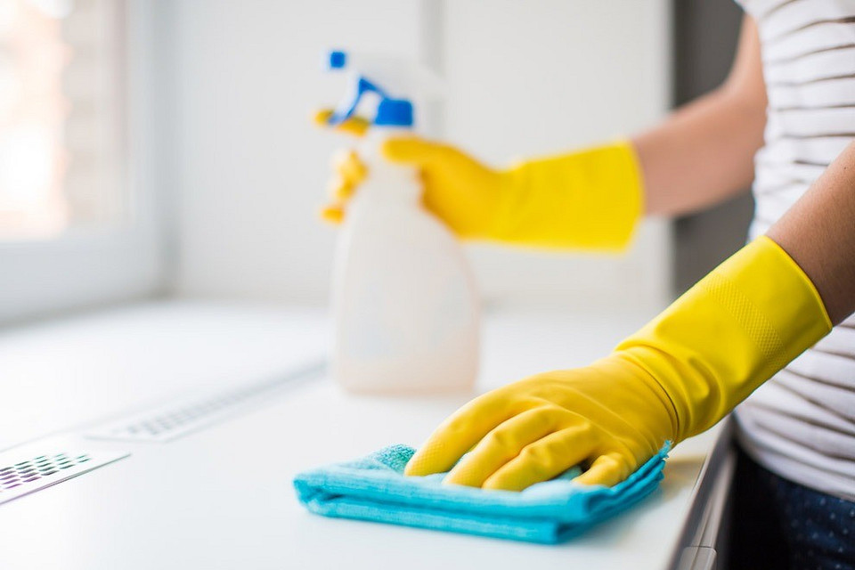

Гарантия качества
Оплата — после
уборки
уборки
Гарантируем
качество
уборки
уборки
Проверенные
клинеры
клинеры
Выполним
уборку
день-в-день
день-в-день
Как проходит уборка?
Этап 1
Подготовка
Начнем с тщательной влажной уборки стен, потолков и других поверхностей, чтобы все было идеально чисто
Подготовка
Начнем с тщательной влажной уборки стен, потолков и других поверхностей, чтобы все было идеально чисто
Этап 2
Уборка кухни
После этого перейдем к уборке кухни - поверхности будут тщательно вымыты, а кухонная техника очищена до блеска
Уборка кухни
После этого перейдем к уборке кухни - поверхности будут тщательно вымыты, а кухонная техника очищена до блеска
Этап 3
Уборка санузлов
Далее сделаем уборку санузлов, обработаем унитазы специальными дезинфицирующими средствами и удалить все загрязнения
Уборка санузлов
Далее сделаем уборку санузлов, обработаем унитазы специальными дезинфицирующими средствами и удалить все загрязнения
Этап 4
Финальные штрихи
И, наконец, проведем финальные штрихи - вымоем полы по всему офису, вынесем мусор и оставим офис абсолютно идеально чистым после нашего визита
Финальные штрихи
И, наконец, проведем финальные штрихи - вымоем полы по всему офису, вынесем мусор и оставим офис абсолютно идеально чистым после нашего визита
Виды уборки в офисах
Генеральная
После ремонта
Регулярная

Команда опытных клинеров с профессиональным оборудованием и руководителем приедет для уборки
помещения в случае после ремонта, переезда или шумной вечеринки
Уборка строительного мусора и бытовых отходов, удаление остатков строительных материалов, скотча и
клея, полировка мебели, дезинфекция сантехники, тщательная борьба с пылью

Каждый день утром или вечером приходит клинер, чтобы поддерживать чистоту и порядок в помещении. Он
заботится о чистоте пола, санузла, моет посуду, убирает пыль и выбрасывает мусор.
Итоговый расчет проводится индивидуально
Уборка офиса в Краснодаре
Для предпринимателей уборка офисов является одной из главных проблем. Целью является обеспечение чистоты в офисах, создание комфортной атмосферы для сотрудников и приятного впечатления для клиентов и гостей. Для проведения крупномасштабных уборок и чистки офисов после проведения ремонтных работ или реставрации, рекомендуется обращаться к клининговым службам. Если вам нужна генеральная уборка офисов, услуги нашей компании помогут вам создать идеальный порядок. У нас вы можете заказать генеральную уборку офиса в любое удобное время.
Генеральная уборка помещения офиса необходима в следующих случаях:
- - После завершения ремонтных работ. Важно качественно убрать рабочие зоны перед обустройством офиса для запуска сотрудников. Нужно не только убрать строительный мусор, но также очистить мебель и ковры от пыли, вымыть полы, окна, зеркала и прочее.
- - Еженедельная генеральная уборка офиса клининговой компанией. Приятно начинать неделю в чистом рабочем месте. Наши сотрудники выполняют мойку окон, химчистку ковров и мебели, полный комплекс работ по уборке.
Что включает в себя генеральная уборка офиса?
- - Очистка радиаторов, конвекторов отопления, труднодоступных мест;
- - Уборка плинтусов и карнизов;
- - Мойка окон со всех сторон;
- - Чистка напольных покрытий, лестничных пролетов;
- - Протирка всех поверхностей (столов, зеркал, шкафов, стульев, техники и др.);
- - Бережная чистка оргтехники.
Если вам требуется провести генеральную уборку офиса, наш клининговый сервис окажет помощь быстро, качественно и с учетом здоровья сотрудников.
Преимущества работы с нами:
- - Соблюдение сроков, оговоренных с заказчиком;
- - Сотрудничество по договору;
- - Профессиональные сотрудники;
- - Использование лучшего оборудования и безопасных чистящих средств;
- - Выезд по предварительной записи в удобное для вас время;
- - Приемлемая стоимость генеральной уборки с возможностью скидок для постоянных клиентов.
Стоимость уборки офиса зависит от площади помещения, количества окон, мебели, ковровых покрытий и других факторов. Если у вас остались вопросы или вы хотите оставить заявку, обратитесь к нашему менеджеру по телефону.